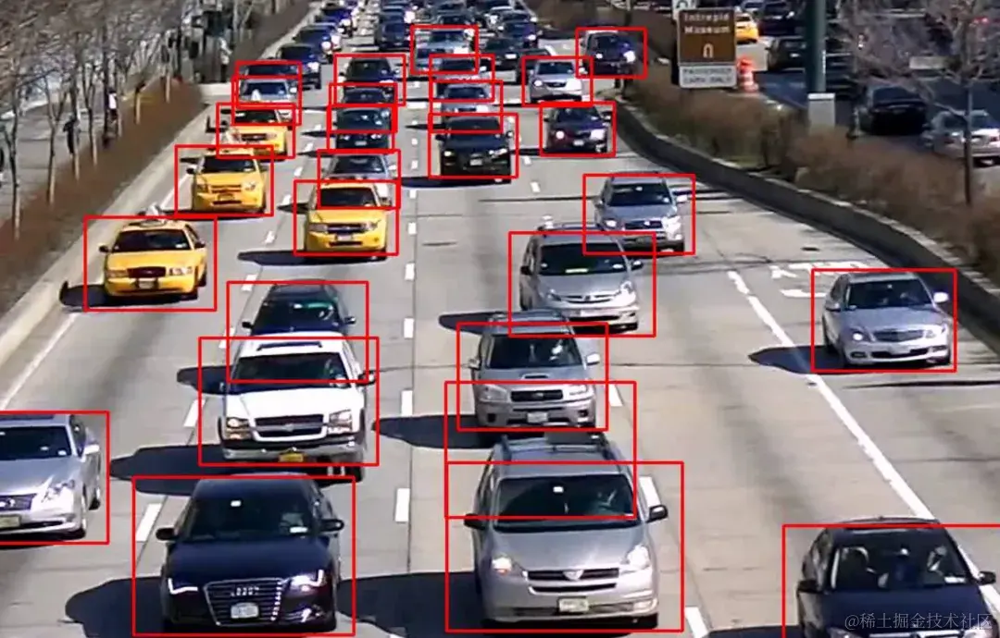
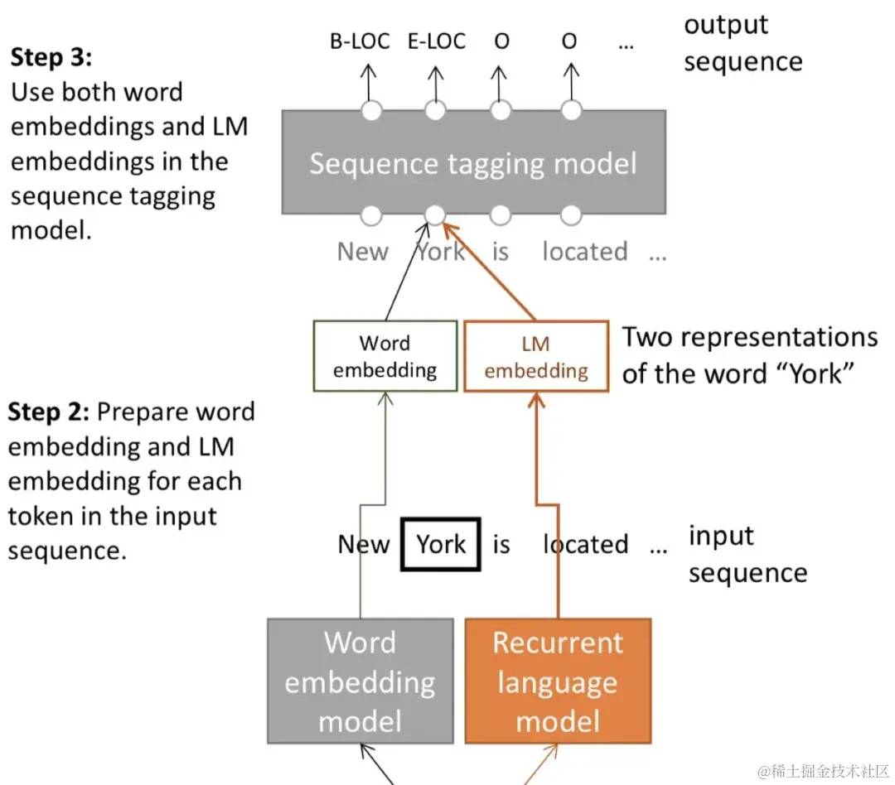
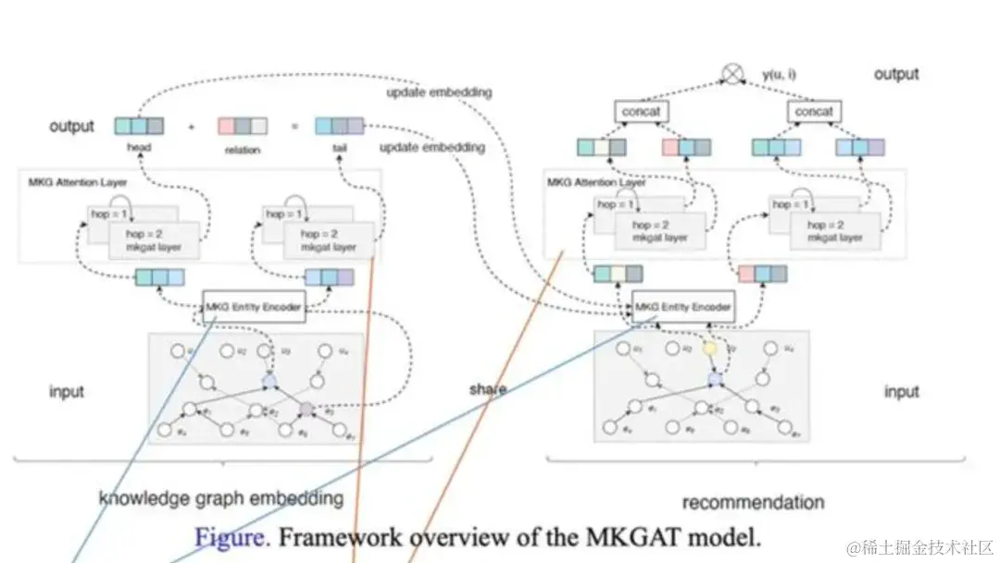
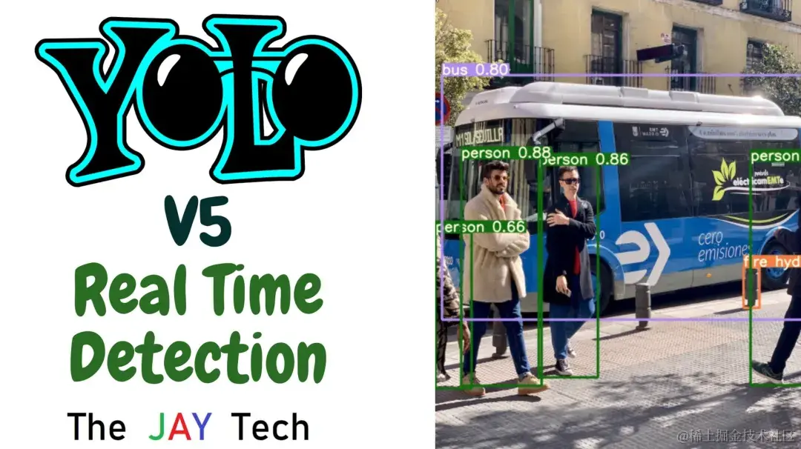

目前人工智能领域中，深度学习技术正以惊人的速度发展。PyTorch 就是其中一个备受关注的深度学习框架。而 js-pytorch 将 PyTorch 的强大功能带入了 JavaScript 世界。
js-pytorch 是一个将 PyTorch 模型转换为 JavaScript 格式的项目，使其能够在浏览器中运行。这意味着你可以在网页上直接运行 PyTorch 模型，无需服务器端的支持。
github 地址：https://github.com/eduardoleao052/js-pytorch
如果大家有疑问， 或者有更好的基于 javascript 的深度学习框架，也欢迎在 留言评论区 分享。
js-pytorch 为网页上的实时推理和模型部署提供了便利。以下是我总结的一些使用场景：

1. 网页中的图像识别：我们可以使用预训练的图像分类模型，让用户上传图片并在浏览器中实时获取预测结果。

2. 自然语言处理：将语言模型集成到网页中，实现实时的文本生成、问答系统等。

3. 在线预测和推荐系统：根据用户的行为和数据，进行实时的个性化推荐。
跨平台支持：无论是在桌面浏览器还是移动设备上，js-pytorch 都能运行。
模型压缩和优化：它支持将已训练好的 PyTorch 模型转换为紧凑的 JavaScript 代码，并进行优化以提高性能。
简单易用：js-pytorch 提供了简洁的 API 和示例，使开发者能够轻松地将 PyTorch 模型集成到 JavaScript 项目中。
以下是一些使用 js-pytorch 的应用案例：
这个项目展示了如何在浏览器中实时进行风格迁移。

它演示了在浏览器中使用 YOLO v5 进行实时目标检测。
根据文档教程，在 JavaScript 项目中安装和使用 js-pytorch 的步骤如下：
npm install js-pytorch
JavaScript 代码中引入 js-pytorch 库，并使用其中的函数和类。以下是一个简单的示例：const { torch } = require("js-pytorch");
// 创建一个随机张量
let x = torch.randn([8, 4, 5]);
// 创建一个全连接层
let fc = new torch.nn.Linear(5, 4);
// 前向传播
let y = fc.forward(x);
console.log(y);
在这个示例中，我们首先引入了 js-pytorch 库，并使用 torch 来创建一个随机张量 x 和一个全连接层 fc。然后，我们使用 fc 的 forward 方法来执行前向传播，并将结果存储在 y 中。最后，我们打印出 y 的值。
请注意，js-pytorch 库需要与 Node.js 环境配合使用。如果大家还没有安装 Node.js，可以在 Node.js 的官方网站上下载并安装。
torch.randn([8, 4, 5]) 是一个在 PyTorch 深度学习框架中用于生成随机张量的函数调用。它的具体解释如下：
torch：这是 PyTorch 库的名称，用于进行深度学习和张量计算。
randn()：这是 PyTorch 中的一个函数，用于生成服从正态分布（均值为 0，标准差为 1）的随机数。
[8, 4, 5]：这是一个张量的形状表示，指定了生成随机张量的维度。
综上所述，torch.randn([8, 4, 5]) 会生成一个形状为 [8, 4, 5] 的随机张量，其中每个元素都服从正态分布，均值为 0，标准差为 1。这个随机张量可以用于深度学习模型的初始化、随机权重生成等操作。每次调用该函数都会得到一个新的随机张量。